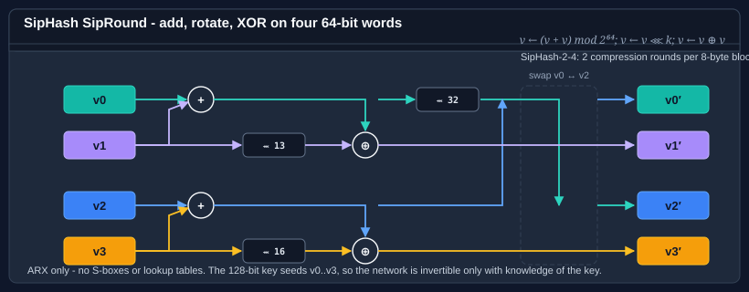

Using SipHash
SipHash is a family of keyed pseudo-random functions designed by Aumasson and Bernstein for one specific job: defeating hash-flooding attacks on hash tables. It takes a 128-bit secret key and a message of any length, and produces a fixed-size digest that is prohibitively expensive to collide without knowledge of the key.
Unlike a one-time authenticator such as Poly1305, SipHash is a reusable PRF: a single key authenticates an unbounded number of messages, and CanReuseTransform is true. That is the property that makes it a drop-in keyed hash for routing, sharding, and DoS-resistant hash tables.

Bodu.Security.Cryptography ships two widths:
| Type | Output | Parameterization (default) | When to reach for it |
|---|---|---|---|
| SipHash64 | 64 bits | SipHash-2-4 | The standard choice - hash-table keys, sharding, short fingerprints. |
| SipHash128 | 128 bits | SipHash-2-4 | Longer output for content-addressing or de-duplication where 64 bits is uncomfortable. |
Both derive from a shared SipHash base, which sits on Bodu's KeyedBlockHashAlgorithm - itself a HashAlgorithm that adds a Key property (this package does not route through the BCL KeyedHashAlgorithm). The key is exactly 16 bytes (the SipHash.KeySize constant, 128 bits) - shorter or longer keys are rejected at configuration time.
Fixed sizes at a glance
| Parameter | Size | Notes |
|---|---|---|
Key |
128 bits (16 bytes) | Fixed; SipHash.KeySize is the length in bits (128). Generate once, store in your process / vault. |
Output (SipHash64) |
64 bits (8 bytes) | - |
Output (SipHash128) |
128 bits (16 bytes) | - |
CompressionRounds |
>= 2 (default 2) |
Inner rounds per 8-byte block. |
FinalizationRounds |
>= 4 (default 4) |
Rounds applied once at the end. |
Pattern 1 - one-shot keyed hash
using System.Security.Cryptography;
using System.Text;
using Bodu.Security.Cryptography;
// 128-bit key - generated once, stored in your process / vault.
// SipHash64.KeySize is the key length in *bits* (128), so divide by 8 for the byte count.
byte[] key = new byte[SipHash64.KeySize / 8]; // 16 bytes
RandomNumberGenerator.Fill(key);
byte[] message = Encoding.UTF8.GetBytes("the quick brown fox");
using var sip = new SipHash64 { Key = key };
byte[] digest = sip.ComputeHash(message); // 8 bytes
ulong fingerprint = BitConverter.ToUInt64(digest);
Swap SipHash64 for SipHash128 when you need 128 bits of output; everything else stays the same.
Pattern 2 - the streaming ComputeHash / TransformBlock lifecycle
SipHash inherits the standard BCL HashAlgorithm contract, so all the usual streaming affordances apply:
using Bodu.Security.Cryptography;
using var sip = new SipHash128 { Key = key };
using var stream = File.OpenRead("message.bin");
byte[] digest = sip.ComputeHash(stream);
You can also drive it block-by-block with TransformBlock / TransformFinalBlock, or - simplest of all - with ComputeHash(ReadOnlySpan<byte>) from the BCL span overload.
Pattern 3 - adjusting the round count
SipHash's two round parameters are the speed / margin trade-off: more rounds, more conservative margin, slower throughput. The defaults (CompressionRounds = 2, FinalizationRounds = 4) give you the published SipHash-2-4, which is what every standard library and protocol uses.
// SipHash-4-8 - extra margin at roughly half the speed.
using var sip = new SipHash64
{
Key = key,
CompressionRounds = 4,
FinalizationRounds = 8,
};
Both rounds must be set before the first TransformBlock / ComputeHash - the setters throw once hashing has started, since changing the schedule mid-stream would invalidate state. The reported AlgorithmName includes the parameterization (e.g. "SipHash-4-8-128"), which is useful in logs and interop headers.
using var sip = new SipHash128 { Key = key, CompressionRounds = 4, FinalizationRounds = 8 };
Console.WriteLine(sip.AlgorithmName); // "SipHash-4-8-128"
Pattern 4 - bucketing or sharding
A common use is to pick a bucket or shard from a user-controlled key. The key into SipHash must be fixed process-wide (so results are stable) and secret (so an attacker cannot pre-compute colliding inputs):
using Bodu.Security.Cryptography;
byte[] ShardKey()
{
// Load once from a vault at startup. Do NOT regenerate per request.
return LoadSecretFromVault(name: "sharding-key-v1");
}
int ShardFor(ReadOnlySpan<byte> routeKey, int shardCount)
{
using var sip = new SipHash64 { Key = ShardKey() };
byte[] digest = sip.ComputeHash(routeKey.ToArray());
ulong h = BitConverter.ToUInt64(digest);
return (int)(h % (ulong)shardCount);
}
This is the canonical "use SipHash, not a non-cryptographic hash" case. An attacker who wants to overload a specific shard would have to invert SipHash without the key - which is what the algorithm is designed to prevent.
Pattern 5 - verifying in constant time
When you compare a computed digest against a trusted one (e.g. a MAC check), do not use SequenceEqual - timing differences leak information. Use the BCL's fixed-time comparison, or the VerifyHash helper from Bodu.Security.Cryptography.Extensions:
using Bodu.Security.Cryptography;
using Bodu.Security.Cryptography.Extensions;
using var sip = new SipHash64 { Key = key };
bool ok = sip.VerifyHash(message, expectedDigest);
See the hashing overview for the general pattern.
What SipHash is not
- Not a MAC for long messages. SipHash was built specifically for short inputs; if you need a MAC over files or network frames, reach for HMAC-SHA-256 (
System.Security.Cryptography.HMACSHA256) or Poly1305. - Not a cryptographic hash. SipHash is a PRF - it resists collision and preimage only while the key stays secret. For a keyless collision-resistant digest, use SHA-256 or Tiger.
- Not deterministic across keys. Two instances with different keys produce unrelated outputs for the same input. That is the point.
Where to go next
- Hashing overview - how SipHash fits alongside cryptographic digests and non-cryptographic fingerprints.
- Using Tiger - a keyless cryptographic digest when you don't have a secret to carry around.
- Using Poly1305 - one-time authenticator that pairs with a stream cipher (the classic Poly1305/ChaCha20 AEAD construction).
- Bodu.IO.Hashing - FNV, CityHash, Adler - the non-keyed, non-adversarial alternatives for trusted inputs.
- Hashing & Cryptography guides - every guide in this topic, across Bodu.IO.Hashing and Bodu.Security.Cryptography.